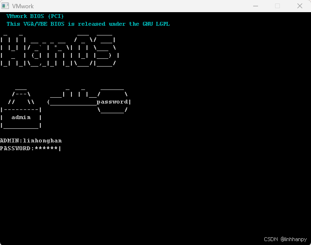

微积分学
这是我们独立编写的教材，以下是更多介绍内容：
VMwork 虚拟机
广山理工计算机系创作

关于
关于我们
贡献者：admin，天仄，余晨落日，诸葛亮，lim，winer，疯子，光滑高斯面
广山理工大学是一所以理工科为特色、由多学科领域优秀研究者共同发起建立的学术机构。学校以数学、物理、化学、计算机科学与工程技术为核心发展方向，始终坚持理论与实际应用紧密结合的办学理念，并以此系统推进教学资源的建设与创新。我们尤其注重将高深专业知识转化为清晰有序、易于理解的表述，使每一本教材与讲义不仅内容严谨，更具备良好的可读性和教学适用性。
在教材建设方面，我们建立起包括内容审定、语言润色和版式设计三个环节在内的标准化编审流程，确保每一部教学材料在科学性、表达准确性和视觉体验上达到优良水准。目前，多项自主研发的讲义和教科书已进入校内试用阶段，并建立了常态化的反馈修订机制，持续吸纳师生意见，不断提升教材质量，致力于为教师和学生提供更加舒适、高效的学习体验。
面向未来，学校将继续完善教学资源体系，重点扩充实际案例分析与习题库，优化章节知识结构，最终形成一套模块完整、可持续更新、广泛适用于课堂教学与自主学习的系列参考教材。同时，广山理工大学将持续加强师资队伍建设，敞开胸怀广泛吸纳海内外高水平人才与青年学者，共同打造一个开放、合作、充满创新活力的学术共同体。
我们立志通过扎实而富有成效的工作，不断提升学术影响力和教育品质，努力将广山理工大学建设成为一所在理工教育领域备受尊敬、广受认可的专业研究院。